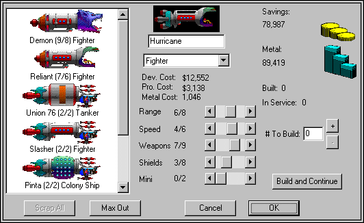

Ships
Designing Ships

This is possibly the coolest part of the game. As your technology increases, you'll want to start building more advanced ships using these new technologies. It's easy. Just set tech levels the way you want your new type to be in the Build/Design Ships dialog. You just move the scroll bars around to set the qualities of the new ship. (The rightmost side of the scroll bar is always whatever your current Tech level is.) When you've got your ship the way you want it, just build one (by pressing the + button) and the prototype will automatically be designed and built.
There are seven major classes of ships: Colony Ships, Satellites, Scouts, Fighters, Dreadnoughts, Tankers, and Biologicals.
Colony Ships
Colony ships carry people and colonize new stars for you. Colony Ships are incredibly expensive both in money and metal. Colony Ships cost so much that you'll want to build only a few of them. That, and because miniaturization doesn't do them much good, will mean that you probably won't want to use any Mini at all on your Colony Ships. Colony Ships are also the first thing the enemy will shoot at in a battle, so you'll want to be careful with them, too.
Satellites
Satellites are ships that don't have engines. That means that their Range is zero. Satellites are a cheap, effective means of defending your planets against enemy attack. Unfortunately, they can't move; they can only defend the planet where they're built. Satellites are much smaller than normal ships, so it doesn't take as many shots to destroy them. Of course, it doesn't take nearly as much metal to build Satellites as Fighters, either. When a planet has Satellites, it'll have a ring around it in the Star Map.
Scouts and Fighters
Scouts and Fighters are your basic ships. The difference between scouts and fighters is a trade-off between Engines and Weapons. Scouts can have a Range two units higher than your Range Tech. Unfortunately, their maximum Weapon and Shield Tech is one lower than your current levels. This makes scouts ideal for exploration, but not too good at combat. Spaceward Ho! will automatically put each scout into its very own fleet, so it can independently go flying off to explore. Fighters automatically clump into one group.
Dreadnoughts
Dreadnoughts are the biggest, baddest fighters in the game. They can take an enormous beating. They have the capability of delivering 30 shots at a time. They cost a fortune of money and metal to make.
Tankers
Tankers are colony ships that don't colonize. Tankers refuel all ships in the same system. If a fleet has a tanker with it, it automatically refuels at every stars it visits, without having to colonize the star. Tankers never run out of fuel.
Tankers cost less than a Colony Ship, but more than a Fighter.
Biologicals
Biologicals are giant spacefaring creatures and not ships at all. They cost no metal to make since they are purely organic. They cost a lot of money and their initial tech settings are lower than your current technology levels. Biologicals also do not refuel like other ships. You can only design new types of Biologicals with Radical research.